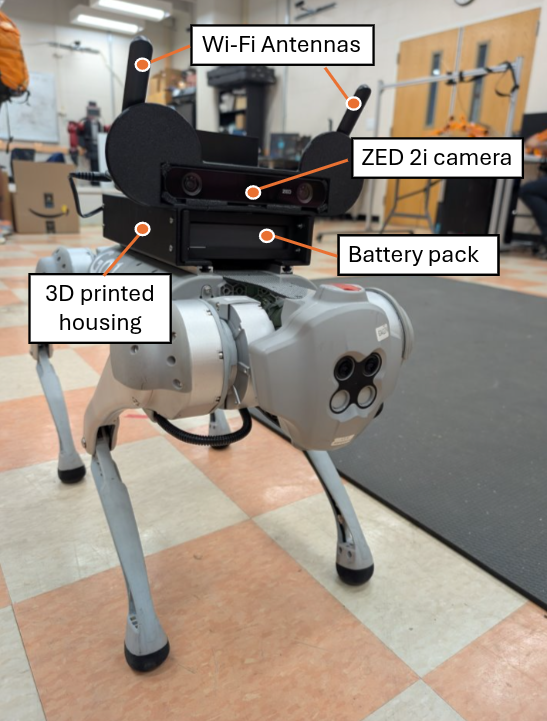
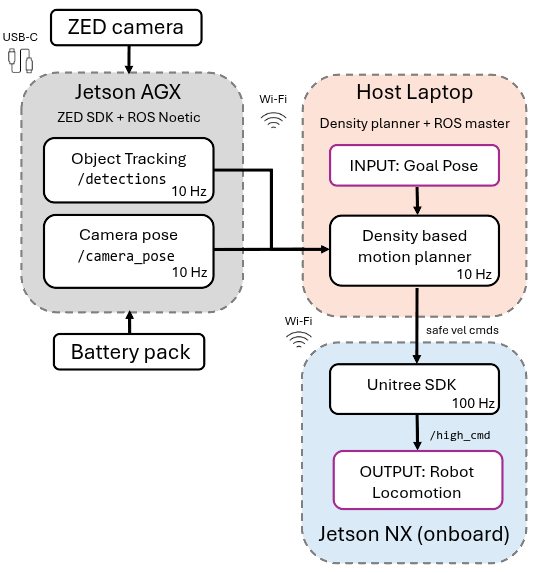
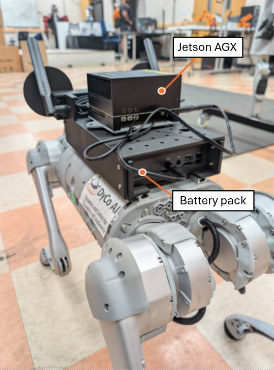
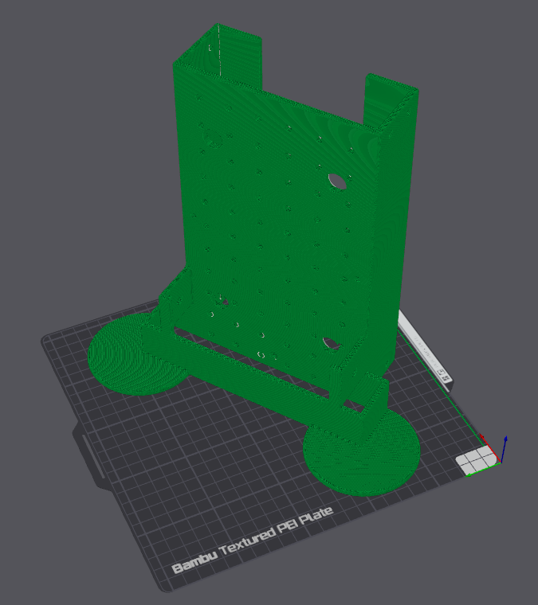
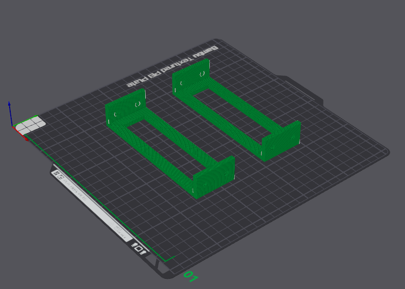

Unitree Go1 · ZED2i · Jetson AGX Xavier · ROS Noetic
Density-Based Safe Motion Planning for Social Navigation
Dynamic safe navigation on a Unitree Go1 using density functions: the robot builds a density field from the goal and online ZED2i pedestrian perception, then uses a feedback controller based on the density gradient as the motion plan for safe high-level velocity commands.
Clemson University
Density-Based Safe Motion Planner
The planner builds a density function over the robot workspace from the current human detections and the desired target. Pedestrians are encoded as low-density unsafe regions, while the goal is encoded as a high-density region. Following the positive gradient of this density gives a safe motion plan: the Go1 moves toward the target while naturally steering away from nearby people. The resulting planar direction is converted into forward velocity and yaw-rate commands for the robot to track. Because the planner is a feedback controller based on the density-gradient evaluation, it is computationally light and can be run faster when moving obstacles or hardware timing require higher update rates.
For more details on safe controllers using density functions, refer to the project page: Safe Navigation Using Density Functions.
Unicycle model
The high-level planner represents the Go1 by its planar position and heading, with forward speed \(v\) and yaw rate \(\omega\) as the commanded inputs.
Density feedback
ZED detections are transformed into moving obstacle regions in the robot workspace. These obstacles shape a density function \(\rho(x,y)\) that decreases near unsafe regions and increases in safe directions. The controller uses the positive density gradient as the desired safe planar velocity, so each update is a direct feedback computation rather than a trajectory optimization.
Mapping to Go1 commands
The safe planar velocity is converted into the unicycle command pair that the Unitree high-level interface can track: forward velocity and yaw rate. The yaw command aligns the robot heading with the safe density-gradient direction.
Density Function Construction
The density function encodes both the moving human obstacles and the robot target in a single smooth field. Human detections create low-density regions around unsafe obstacle sets, while the target term increases density near the desired goal. By following the positive gradient of this function, the robot moves toward higher density, stays away from nearby pedestrians, and produces safe motion-planning commands for the Go1 to track.
Hardware Stack



System Details
Platform. The physical platform is a Unitree Go1 carrying a ZED2i stereo camera and a Jetson AGX Xavier powered by an external MAXOAK K2 battery through the battery's 20 V output. The camera, compute, and battery are mounted using custom printed hardware. The Jetson runs JetPack 5.1.2 / L4T R35.4.1 with ZED SDK 5.1.2 and ROS Noetic inside the perception container. The Jetson software stack is deployed with Docker so the ZED SDK, ROS Noetic dependencies, Autoware message packages, and camera nodes can be reproduced on the AGX Xavier.
Distributed compute. The ZED perception stack runs on the Jetson AGX Xavier, the density planner runs on the host laptop, and the Unitree high-level bridge runs on the robot onboard Jetson NX. These nodes exchange ROS messages over the Go1 Wi-Fi network during experiments.
Perception. The ZED SDK provides
positional tracking
for camera visual odometry and
3D object detection and tracking
for pedestrians. camera_node.py publishes pedestrian
tracks, camera pose, and video frames at 10 Hz.
Control timing. motion_plan_exp.py
defaults to a 10 Hz planning loop. At each tick it consumes the
latest /detections and /camera_pose,
computes a density-gradient feedback command, and publishes
Unitree HighCmd to /high_cmd. The robot's
onboard low-level controller runs at 100 Hz and tracks the
high-level velocity command.
ROS interface. The perception container publishes
autoware_msgs/DetectedObjectArray on
/detections, geometry_msgs/PoseStamped on
/camera_pose, and image frames on /video.
The planner also publishes /detections_markers and
records synchronized marker and velocity bags for analysis.
Custom Mount Print Files
The repository includes saved Bambu Studio .gcode.3mf
files for printing the custom camera, Jetson, and battery mounting
hardware. These are print-ready G-code archives rather than clean
CAD/STL source files.
View the hardware G-code folder.


Hardware Experiments
These in-the-wild trials were collected with the physical Go1 setup during the Spring 2026 graduation reception ceremony in the Department of Mechanical Engineering at Clemson University. The videos show the robot navigating around people in a real social setting, with onboard perception, local planning, and high-level commands running on the deployed hardware stack.
Reproduce
Full setup and run instructions are maintained in the GitHub README, including host PC networking, Jetson Docker setup, ZED camera startup, Unitree high-level bridge launch, and the density controller workflow.